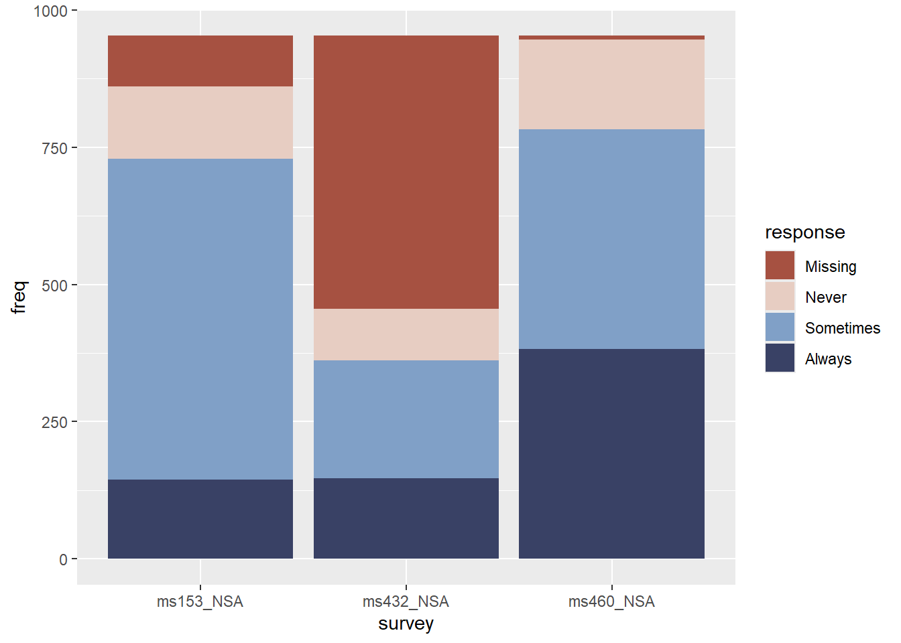

I am examining a dataset reguarding surveys relating to Influenza vaccination
Setup
#|label: setuplibrary(tidyverse)
── Attaching core tidyverse packages ──────────────────────── tidyverse 2.0.0 ──
✔ dplyr 1.1.4 ✔ readr 2.1.6
✔ forcats 1.0.1 ✔ stringr 1.6.0
✔ ggplot2 4.0.1 ✔ tibble 3.3.1
✔ lubridate 1.9.4 ✔ tidyr 1.3.2
✔ purrr 1.2.1
── Conflicts ────────────────────────────────────────── tidyverse_conflicts() ──
✖ dplyr::filter() masks stats::filter()
✖ dplyr::lag() masks stats::lag()
ℹ Use the conflicted package (<http://conflicted.r-lib.org/>) to force all conflicts to become errors
library(skimr)library(ggformula)
Loading required package: scales
Attaching package: 'scales'
The following object is masked from 'package:purrr':
discard
The following object is masked from 'package:readr':
col_factor
Loading required package: ggiraph
Loading required package: ggridges
New to ggformula? Try the tutorials:
learnr::run_tutorial("introduction", package = "ggformula")
learnr::run_tutorial("refining", package = "ggformula")
library(vcd)
Loading required package: grid
library(vcdExtra)
Loading required package: gnm
Registered S3 method overwritten by 'vcdExtra':
method from
print.Kappa vcd
Attaching package: 'vcdExtra'
The following object is masked from 'package:vcd':
woolf_test
Attaching package: 'resampledata'
The following object is masked from 'package:vcdExtra':
TV
The following object is masked from 'package:datasets':
Titanic
freq: number of respondents represented in each row
subject: identifier linking respondents across surveys
survey: survey designation from the ALP website
start_date: start date of survey
end_date: end date of survey
response: discretized probability of vaccinating for influenza
##Summarising the Data
skim(vaccinations)
Data summary
Name
vaccinations
Number of rows
117
Number of columns
6
_______________________
Column type frequency:
Date
2
factor
2
numeric
2
________________________
Group variables
None
Variable type: Date
skim_variable
n_missing
complete_rate
min
max
median
n_unique
start_date
0
1
2010-09-22
2016-09-27
2015-06-04
3
end_date
0
1
2010-10-25
2016-10-25
2015-10-05
3
Variable type: factor
skim_variable
n_missing
complete_rate
ordered
n_unique
top_counts
survey
0
1
FALSE
3
ms1: 39, ms4: 39, ms4: 39
response
0
1
FALSE
4
Som: 37, Alw: 29, Mis: 26, Nev: 25
Variable type: numeric
skim_variable
n_missing
complete_rate
mean
sd
p0
p25
p50
p75
p100
hist
freq
0
1
24.44
34.75
1
3
10
36
168
▇▂▁▁▁
subject
0
1
20.00
11.30
1
10
20
30
39
▇▇▇▇▇
Visualising the Frequency of Responses about people’s Influenza Vaccination intent
vaccinations %>%gf_boxplot(response ~ freq, fill =~response, alpha =0.7) %>%gf_labs(title ="Frequency of Responses for Vaccination") %>%gf_refine(scale_fill_paletteer_d(`"dutchmasters::pearl_earring"`))
Comments
The graph shows that most people have opted for “Always” indicating that there is strong willingness to get vaccinated. There are quite a few people who have opted for “Sometimes” that many people are uncertain about vaccination. “Never” responses are mostly low in frequency, suggesting complete rejection of vaccination is less prevalent among people across surveys. There are also a few people who have not chosen anything suggesting indecisiveness among some, who are not sure of what they would opt for.
Visualising people’s Influenza Vaccination intent across Surveys
vaccinations %>%gf_col(freq ~ survey, fill =~response) %>%gf_refine(scale_fill_paletteer_d(`"dutchmasters::pearl_earring"`))

Comments
The frequency of vaccination intent differs visiby by survey, suggesting that different survey context get different responses. “Sometimes” and “Missing” responses are quite noticeable, suggesting many people do not have enough information about influenza vaccination.
Visualising people’s Vaccination intent through subjects
The graph shows that the same subjects appear across multiple surveys, showing how different respondents contribute to multiple different vaccination surveys. Flows from surveys to responses are spread across all intents, indicating no single survey has one same response for all.